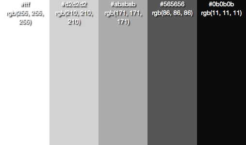
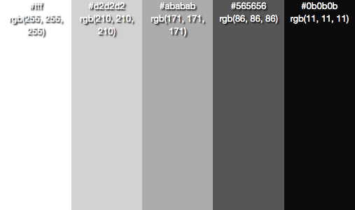

Monochrome Palettes
The word ‘monochrome’ is made up of two Greek words: ‘mono’
meaning ‘one’, and ‘khroma’ meaning ‘color’. As you can guess,
each monochrome palette is made up of only one colour, showing
off the various appealing shades. While monochrome aesthetics
do look amazing, you can also use these palettes to find the right
shade of a color that you’re looking for, and pair it with another
color. Happy hunting!
P.S- Zoom in to find the color code, so you can replicate the exact
shade! :)


 
